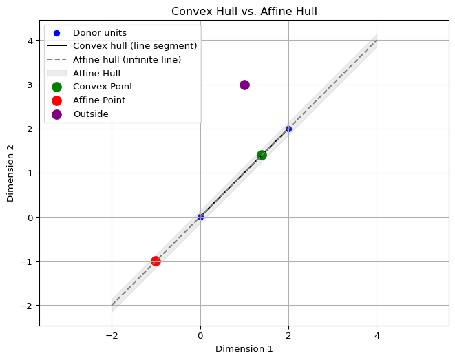

Forward Selected Augmented Synthetic Controls
Causal Inference
Econometrics
Introduction
Synthetic Control Methods (SCM) is a widely used framework for estimating causal effects when randomized experiments are not feasible. At its core, SCM constructs a weighted average of control (donor) units to approximate the treated unit’s pre-treatment trajectory. The goal is to find an in-sample/pre–treatment average of controls that closely mirrors the treated unit before the intervention.
Much of the method’s credibility hinges on the quality of this pre-treatment fit. Econometricians regularly warn that poor pre-treatment fit undermines the validity of SCM estimates. Even if the optimization problem is formally well-posed, poor alignment between the treated unit and its in-sample match can lead to substantial bias. The intuition is straightforward: if similar units are assumed to behave similarly, a control group that fails to mimic the treated unit before treatment is unlikely to produce a credible counterfactual afterward. Just as important as pre-treatment fit is the composition of the donor pool. Including irrelevant or poorly matched units, or omitting relevant ones, can distort the synthetic weights and lead to misleading inferences. But how should the donor pool be chosen?
One increasingly popular solution to the imperfect match is the Augmented Synthetic Control Method (ASCM), known in industry through Meta’s GeoLift library. Shops like Recast use it, and data scientists such as Mandy Liu and Svet Semov have helped bring it to applied audiences.
Methods for donor pool selection have also received attention. In fact, this is part of what makes GeoLift so popular: it attempts to identify the most similar markets to a treated group before the intervention. In academic settings, approaches like forward selection, and even random forests have been proposed to automate or guide the choice of appropriate donors.
But what if we can do better?
In previous posts, I’ve written about donor selection strategies and how to handle imperfect pre-treatment fit. In this post, I introduce a synthesis of both: the Augmented Forward-Selected Synthetic Control estimator. By combining forward selection with a bias correction estimator, I show that we can reduce in-sample risk relative to the standard ASCM and Forward SCM alone. This approach is illustrated using two popular SCM case studies: the Kansas tax cut experiment and California’s Proposition 99.
Notations
Formally, let \(\mathbb{R}\) denote the set of real numbers. A calligraphic letter, such as \(\mathcal{S}\), represents a discrete set with cardinality \(S = |\mathcal{S}|\). Let \(j \in \mathbb{N}\) index a total of \(N\) units and \(t \in \mathbb{N}\) index time. Unit \(j=1\) is the treated unit, with the set of control units defined as \(\mathcal{N}_0 = \mathcal{N} \setminus \{1\}\), of cardinality \(N_0\). The pre-treatment period is \(\mathcal{T}_1 = \{ t \in \mathbb{N} : t \leq T_0 \}\), where \(T_0\) is the last period before treatment, and the post-treatment period is \(\mathcal{T}_2 = \{ t \in \mathbb{N} : t > T_0 \}\). The observed outcome for unit \(j\) at time \(t\) is \(y_{jt}\), and the generic outcome vector for unit \(j\) is \(\mathbf{y}_j \in \mathbb{R}^T\), so that \(\mathbf{y}_j = (y_{j1}, y_{j2}, \dots, y_{jT})^\top\). The treated unit’s outcome vector is \(\mathbf{y}_1\), and the donor matrix is defined as \(\mathbf{Y}_0 \coloneqq \begin{bmatrix} \mathbf{y}_j \end{bmatrix}_{j \in \mathcal{N}_0} \in \mathbb{R}^{T \times N_0}\), with each column corresponding to a donor unit and each row corresponding to a time period.
I will frequently refer to linear combinations of the donor units’ outcomes. Two important geometric concepts help clarify the space of possible synthetic controls: The convex hull of the donor units, denoted \(\operatorname{conv}(\mathbf{y}_j)_{j \in \mathcal{N}_0}\), is the set of all weighted averages of donor vectors where the weights are non-negative and sum to one:
\[ \operatorname{conv}(\mathbf{y}_j) = \left\{ \sum_{j \in \mathcal{N}_0} w_j \mathbf{y}_j \,\middle|\, w_j \geq 0, \sum_{j} w_j = 1 \right\}. \] This is the feasible region for standard SCM weights \(\mathbf{w} \in \Delta^{N_0}\). The affine hull, denoted \(\operatorname{aff}(\mathbf{y}_j)_{j \in \mathcal{N}_0}\), is the set of all affine combinations of donor vectors — that is, the set of linear combinations where the weights sum to one, but may include negative values:
\[ \operatorname{aff}(\mathbf{y}_j) = \left\{ \sum_{j \in \mathcal{N}_0} w_j \mathbf{y}_j \,\middle|\, \sum_{j} w_j = 1 \right\}. \] This is the feasible region for the ASC estimator. While both are weighted averages, the convex hull is a “weighted average” over the subsapce of the donor outcomes, while the affine hull is a “shifted subspace” that contains the convex hull but allows for extrapolation beyond it.
Synthetic Controls
SCM solves the program
\[ \mathbf{w}^\ast = \underset{\mathbf{w} \in \Delta^{N_0}}{\operatorname*{argmin}} \|\mathbf{y}_1 - \mathbf{Y}_0 \mathbf{w} \|_2^2 \quad \forall t \in \mathcal{T}_1. \]
We seek the weight vector \(\mathbf{w}\) that minimizes the mean squared error between the treated unit outcomes and the weighted average of control units in the pre-treatment period.
The Forward Selection variant (ideally) builds a sparse synthetic control by greedily adding one donor at a time to minimize the pre-treatment fit error. Let \(S = \emptyset\) denote the initial (empty) set of selected donors. At each iteration, the algorithm considers every donor \(j \notin S\), temporarily forming a new set \(S' = S \cup \{j\}\). For each such candidate set \(S'\), it solves the synthetic control optimization problem restricted to the columns of \(\mathbf{Y}_0^{S'}\), where \(\mathbf{Y}_0^{S'}\) denotes the submatrix of donor outcomes for units in \(S'\). The donor \(j^*\) whose inclusion yields the smallest pre-treatment RMSE is then added to \(S\). This process continues at the discretion of the user, until either all/some portion of donors have been exhausted, or a model selection criterion, the modified BIC, begins to increase and full_selection = FALSE. The modified BIC is defined as:
\[ \text{mBIC}(S) = T_0 \cdot \log(\text{MSE}) + |S| \cdot \log(T_0) \]
where
\[ \text{MSE} = \frac{1}{T_0} \left\| \mathbf{y}_1 - \mathbf{Y}_0^S \mathbf{w}_S \right\|_2^2. \]
This penalized error criterion trades off in-sample fit and model complexity, enabling the construction of a sparse but well-performing synthetic control using only a small, carefully chosen subset of donor units.
The Augmented Synthetic Control Estimator
Building on this baseline formulation, the ASCM introduces a regularization term that penalizes deviations of the weight vector from a reference or initial weight vector, \(\mathbf{w}_0\). The augmented objective can be written as
\[ \mathbf{w}^\ast_\text{aug} = \underset{\mathbf{w} \in \Delta^{N_0}}{\operatorname*{argmin}} \|\mathbf{y}_1 - \mathbf{Y}_0 \mathbf{w} \|_2^2 + \lambda \|\mathbf{w} - \mathbf{w}_0\|_2^2 \quad \forall t \in \mathcal{T}_1, \]
where \(\lambda \ge 0\) controls the strength of the penalty.
About that lambda…
Note
One may ask “Jared, why did you include the penalty on the weight deviation term instead of the fit term, as Ben-Michael and co. do in Equation 18 of their paper?” Here’s why.
In ASCM, the placement of the regularization parameter \(\lambda\) determines how the estimator balances pre-treatment fit and fidelity to the original SCM weights. Their formulation (e.g., Ben-Michael et al. 2021) minimizes:
\[ \mathbf{w}^\ast_{\text{alt}} = \underset{\sum w_j = 1}{\operatorname*{argmin}} \; \lambda \|\mathbf{y}_1 - \mathbf{Y}_0 \mathbf{w}\|_2^2 + \|\mathbf{w} - \mathbf{w}_0\|_2^2 \]
while ours solves:
\[ \mathbf{w}^\ast_{\text{aug}} = \underset{\sum w_j = 1}{\operatorname*{argmin}} \; \|\mathbf{y}_1 - \mathbf{Y}_0 \mathbf{w}\|_2^2 + \lambda \|\mathbf{w} - \mathbf{w}_0\|_2^2 \]
It turns out these are mathematically equivalent under a simple reparameterization. If we define \(\lambda_{\text{alt}} = \frac{1}{\lambda_{\text{aug}}}\), then both objectives yield the same solution. This follows directly from the first-order conditions of each problem, which differ only by a scaling of the Lagrange multiplier.
So in truth, it’s just a matter of which interpretation you find more natural.
I personally prefer our formulation. Here’s why: in the affine-regularized version of the forward-selected synthetic control, \(\mathbf{w}_0\) comes from a deliberately chosen sparse model. As \(\lambda \to \infty\), the penalty on deviation dominates, and \(\mathbf{w}^\ast_{\text{aug}}\) collapses to the projection of \(\mathbf{w}_0\) onto the affine constraint \(\sum_j w_j = 1\). This makes intuitive sense: when the original FSCM fit is already good, we want to stick close to it.
Conversely, as \(\lambda \to 0\), the regularization term disappears and the solution becomes the best-fitting affine combination of the donor units — completely unconstrained by the initial weights. That’s appropriate when the original fit is poor and we’re willing to learn something new.
So while the math is equivalent, the perspective isn’t. I find it more natural to think of \(\lambda\) as controlling how much I “trust” the prior weights. And that’s easier to reason about when \(\lambda\) is attached to the deviation term.
The intuition here is pretty simple. If the SCM weights are already giving us good pre-treatment fit, then there is little incentive to extrapolate away from the original (F)SCM solution. However, if there’s need for better fit, then we will extrapolate away from the convex hull solution. In practice, BMFR advocate for choosing lambda via cross validation.
Forward-Selected Augmented Synthetic Controls
The Forward-Selected Augmented Synthetic Control (FASC) estimator synthesizes two complementary strategies in SCM research: forward selection of donors and bias correction via the discrepancy correction It begins with a Forward SCM, selecting a small set of donors that best approximate the treated unit in the pre-treatment period via forward selection. Then, instead of stopping there, it augments this base model with a bias-corrected adjustment by seeing whether an affine combination can do much better than the convex combination, using the original weights as a warm start. The FS-ASC estimator solves:
\[ \mathbf{w}^\ast_{\text{FASC}} = \underset{\mathbf{w} \in \mathbb{R}^{N_0}, \sum w_j = 1}{\operatorname*{argmin}} \; \left\| \mathbf{y}_1 - \mathbf{Y}_0 \mathbf{w} \right\|_2^2 + \lambda \left\| \mathbf{w} - \mathbf{w}_0 \right\|_2^2. \]
The solution lies in the affine hull of all donors, but it is regularized to remain close to the sparse, interpretable model obtained from forward selection on the condition that the originally selected model is good. The strength of this regularization is governed by the parameter \(\lambda\).
The regularization parameter \(\lambda\) is selected via time-split cross-validation on the pre-treatment period. First, use the first half (\(t = 1, \dots, \lfloor T_0/2 \rfloor\)) to fit candidate weights \(\mathbf{w}(\lambda)\). Then, use the second half (\(t = \lfloor T_0/2 \rfloor + 1, \dots, T_0\)) to evaluate prediction error. For each candidate \(\lambda\), we compute:
\[ \mathbf{w}(\lambda) = \arg\min_{\mathbf{w}, \sum w_j = 1} \left\| \mathbf{y}^{(1)} - \mathbf{Y}_0^{(1)} \mathbf{w} \right\|_2^2 + \lambda \left\| \mathbf{w} - \mathbf{w}_0 \right\|_2^2, \] \[ \text{CV-RMSE}(\lambda) = \left\| \mathbf{y}^{(2)} - \mathbf{Y}_0^{(2)} \mathbf{w}(\lambda) \right\|_2, \]
and select the value of \(\lambda\) that minimizes the cross-validation RMSE.
To efficiently explore the hyperparameter space, I use skopt’s Bayesian optimization over \(\log_{10}(\lambda) \in [-2, 3]\), corresponding to \(\lambda \in [10^{-2}, 10^3]\). The optimization proceeds as follows: A Gaussian Process (GP) prior is placed over the unknown function \(\lambda \mapsto \text{CV-RMSE}(\lambda)\). This GP models both the mean and uncertainty of the objective function. The algorithm begins with a small number of initial random evaluations. At each step, the next \(\lambda\) to evaluate is chosen by maximizing an acquisition function, in this case the Expected Improvement (EI), which balances exploration and exploitation. This process continues for a total of 50 steps (or as specified). Once the optimal \(\lambda^\ast\) is identified, the final weight vector is estimated by solving:
\[ \mathbf{w}^* = \arg\min_{\mathbf{w}, \sum w_j = 1} \left\| \mathbf{y} - \mathbf{Y}_0 \mathbf{w} \right\|_2^2 + \lambda^\ast \left\| \mathbf{w} - \mathbf{w}_0 \right\|_2^2. \]
The resulting weights lie in the affine hull of the donor pool and strike a balance between fitting the treated unit and remaining close to the original sparse solution.
As above, when \(\lambda\) is large, the augmented weights remain close to \(\mathbf{w}_0\); when \(\lambda\) is small, the estimator prioritizes fit over sparsity and may extrapolate well beyond the original donor set. In essence, FS-ASC gives us the best of both worlds: interpretability and parsimony from sparse donor selection, and flexibility and reduced bias from affine augmentation. Empirically (we will see this below), it yields lower pre-treatment error than either method alone.
Kansas Tax Cuts
/opt/hostedtoolcache/Python/3.13.6/x64/lib/python3.13/site-packages/mlsynth/utils/datautils.py:434: FutureWarning: The default of observed=False is deprecated and will be changed to True in a future version of pandas. Pass observed=False to retain current behavior or observed=True to adopt the future default and silence this warning.
observations_per_unit = df.groupby(unit_id_column_name)[time_period_column_name].nunique() # Changed from .count() to .nunique() for robustness
Thjs is the Kansas example.
Data Science for Policy Analysts: A Simple Introduction to Web Scraping
Web Scraping
Python
Forward Selected Synthetic Control
Machine Learning
Econometrics
Synthetic Controls With More Than One Outcome
Causal Inference
Econometrics
Synthetic Control Methods for Personalized Causal Inference
Causal Inference
Econometrics
Synthetic Controls Do Not Care What Your Donors Are. So Why Do You?
Econometric Theory
Synthetic Controls With Non-Linear Outcome Trends: A Principled Approach to Extrapolation
Causal Inference
Econometrics
The Iterative Synthetic Control Method
Econometrics
The Synthetic Historical Control Method
Econometrics
What is a Synthetic Control?
Econometrics
Causal Inference
No matching items